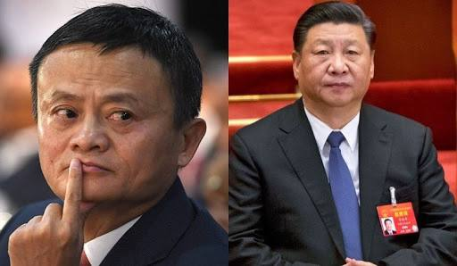

Alibaba asoschisi Jek Maning eng qimmat biznes darsi: Xitoyda faqat bitta lider bor.

Milliarder tadbirkor Amerikaning texnologik afsonalari cho'qqilariga mos tushdi, ammo Xitoy rahbari Si Tszinpin hali ham zarba berishga chaqirganligi haqidagi ogohlantirishlarga e'tibor bermadi.
Aqlli va tirishqoq - Jek Ma Xitoyning eng yirik biznes imperiyasi asoschisi bir yil ichida XXR rasmiylarining harakatlari tufayli boyligining uchdan bir qismini (36 foiz) yo‘qotdi.
Alibaba bir yil ichida kapitallashuvidan 344 milliard dollar yo‘qotdi. Oktyabr oyi boshida Alibaba aksiyalari Gonkong savdolarida kompaniyaga talablarning kuchayishi va rasmiylarning fintech biznesini qayta qurishga chaqirishlari fonida rekord darajada pasayib ketdi.
O‘tgan yilning kuzida ma’lum bo‘lishicha, Jek Ma Xitoyda yuqori texnologiyali sanoatni tartibga soluvchi qoidalarni tanqid qilganidan so‘ng, Ant Group (Alibaba sh.k.) aksiyalarini joylashtirishni to‘xtatib turishni XXR raisi Si Tszinpin shaxsan o‘zi topshirgan.